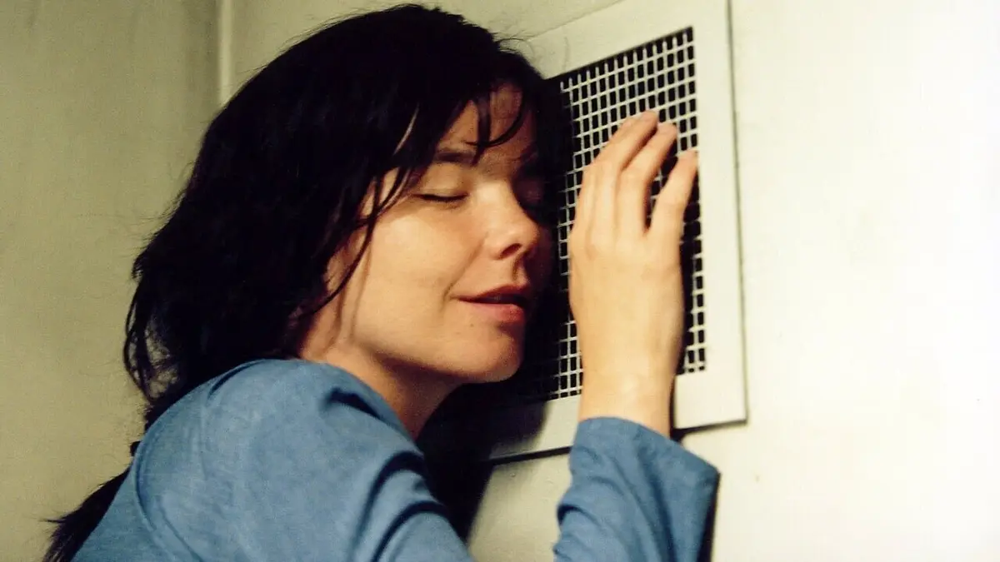
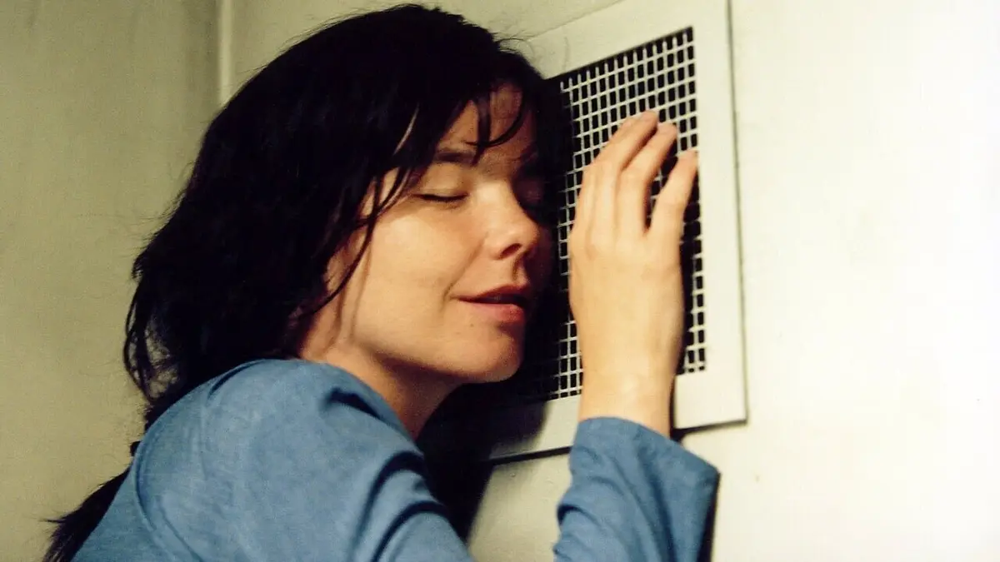

Vespertine foi lançado em 2001 e é o quarto álbum de estúdio da cantora. Coros, harpas e caixinhas de música formam os elementos principais para a criação do onírico Vespertine. Björk revoluciona sentimentos de profundeza, ironia e de uma mulher sexy, juntando tudo isso e levando a um nível extremamente simbólico e organizado.
Debut foi produzido pela própria Björk ao lado do britânico Nellee Hooper. O álbum teve como base o rock da banda de origem da cantora, mas ganhou elementos de uma variedade eclética de estilos, incluindo house music, jazz e trip hop.

Post é o segundo álbum de estúdio da cantora islandesa Björk. Influenciada pelas tendências do jazz, do trip hop e de mais alguns estilos, Björk fez com que Post fosse um álbum de grande sucesso nos anos 90.